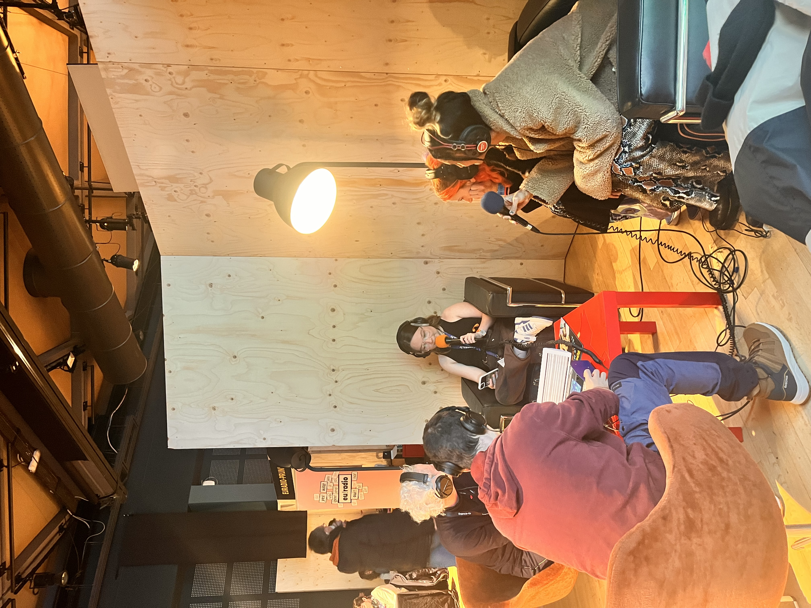
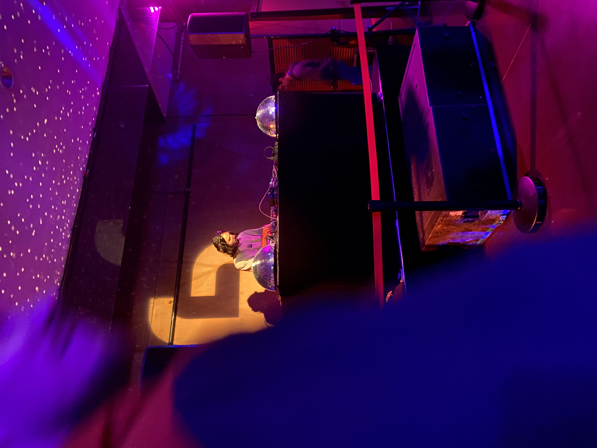
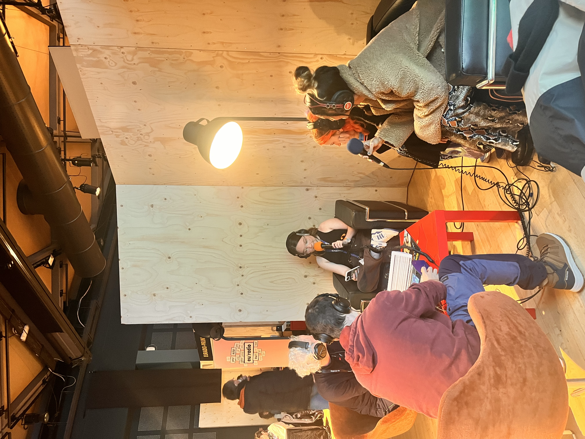
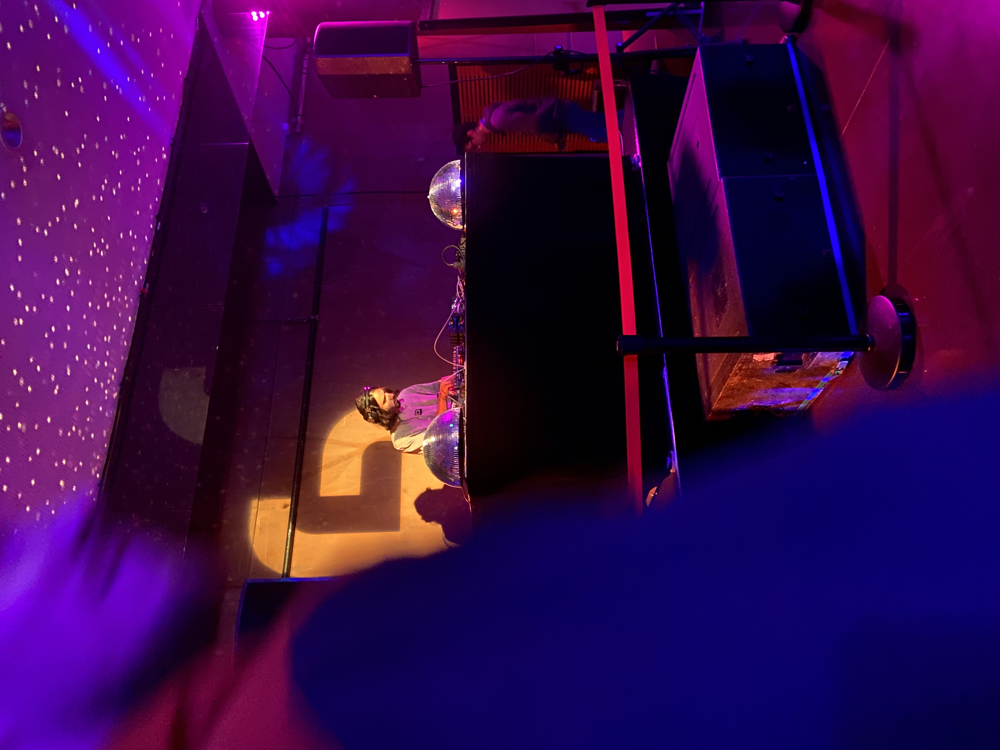

Festiv’Art
Coordination technique et accueil artistes pour un festival de talents étudiants.
Étudiante BUT Info-Com. Créative & Stratège.

La communication n'est pas un bruit de fond, c'est une connexion. Ce portfolio est mon laboratoire d'idées. Il ne montre pas seulement ce que j'ai fait, mais comment je pense : avec structure, élégance et impact.
Coordination technique et accueil artistes pour un festival de talents étudiants.
Organisation d'une conférence sur la musique et la politique. Gestion d'imprévus majeurs.
Websérie en trois épisodes visant à valoriser le cirque contemporain et le rôle du chapiteau.
Simulation immersive de gestion de crise et intervention télévisée face aux journalistes.
Analyse et refonte de la stratégie de communication pour la bibliothèque de la Maison des Femmes.
Au-delà de mes études, je multiplie les expériences de terrain. Ces engagements forgent mon adaptabilité, mon sens du contact et ma rigueur professionnelle.
Un projet ? Une alternance ? N'hésitez pas à m'écrire.
Conférence étudiante & Gestion de crise


Une conférence questionnant l'usage de la musique par les artistes comme outil de revendication et de mobilisation politique.
Annulation de deux intervenants sur trois une heure avant le début. Refonte immédiate du déroulé pour maintenir l'événement.
Ce projet prouve que je sais garder mon sang-froid et que l'imprévu me pousse à réagir.
Animation Radio & Reportages Terrain
 



Retrouvez ci-dessous une sélection de mes interventions, interviews et reportages réalisés pour la station.